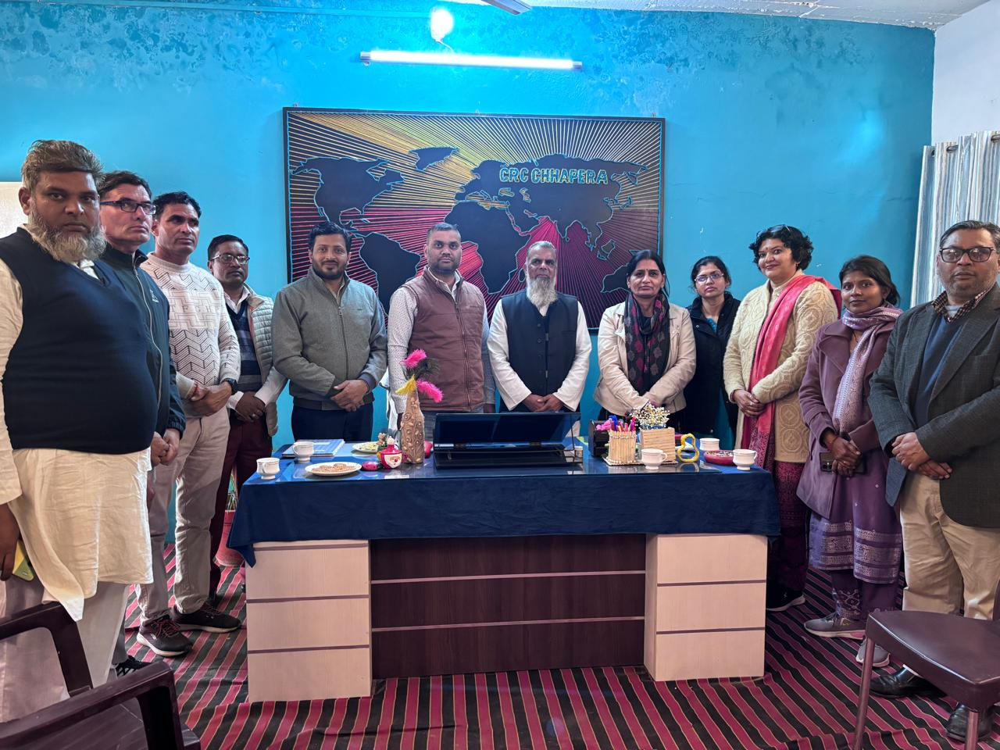
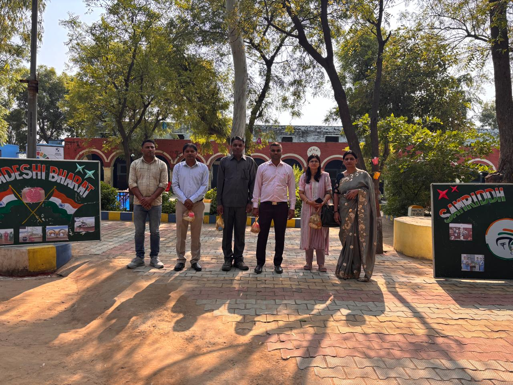
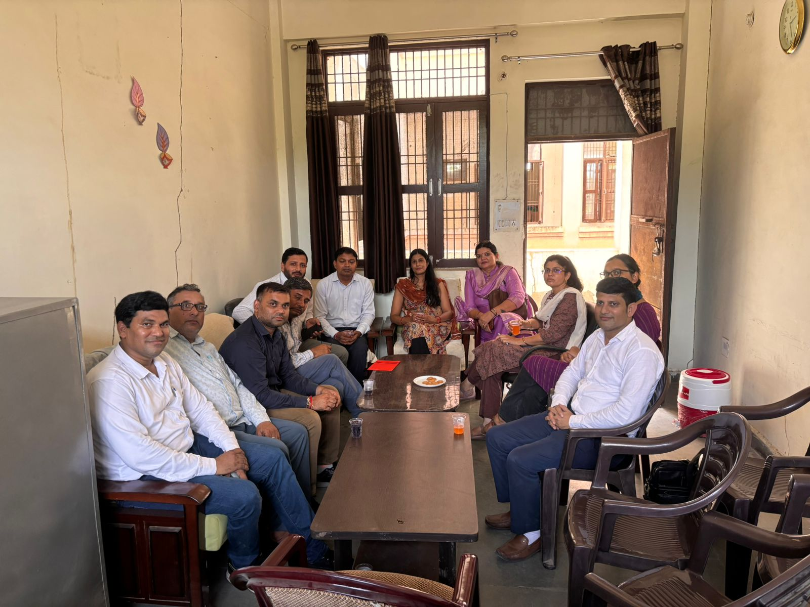

As per the provisions of NPE-1986, DIETs were established to organize pre-service and in-service courses for elementary school teachers and for the personnel working in non-formal and adult education.
DIETs are a part of a larger strategy to achieve national goals in the areas of elementary and adult education and function according to the needs of individual states & districts.
Pursuit of excellence would have to inform all activities of the DIETs:
DIETs are expected to become models for other educational institutions with effective planning, execution, and a positive organizational environment.
Every DIET should establish a close and continuing dialogue with the field, i.e. with elementary schools (now foundational to secondary schools in the district in the light of NEP 2020), school complexes, teachers, headmasters, school supervisors, instructors/supervisors/project officers of NFE/AE anganwadi workers and functionaries of ICDS department pertaining to pre-primary education/ECCE and with district level officers of these sectors and with organizations and institutes at the national, state, division and district levels whose objectives and interests converge with its own.


